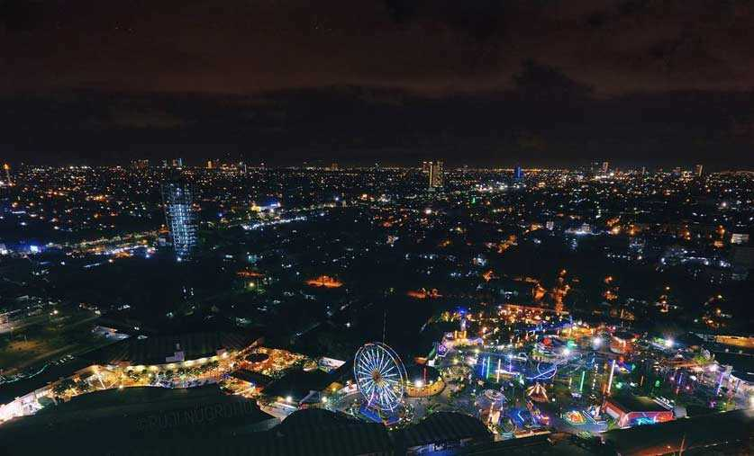

Kota Surabaya (Hanacaraka: ꦑꦸꦛꦯꦸꦫꦧꦪ; Pegon Jawa: كوڟاسورابايا, tr. Kutha Surabaya, pengucapan bahasa Jawa: [kuʈɔ surɔˈbɔjɔ]. Pegon Madura: سَوربٓجٓه, tr. Sorbhâjâh. Hanzi: 泗水) adalah ibu kota Provinsi Jawa Timur, Indonesia, sekaligus kota metropolitan terbesar di provinsi tersebut. Surabaya merupakan kota terbesar kedua di Indonesia setelah Jakarta. Kota ini terletak 800 km sebelah timur Jakarta, atau 435 km sebelah barat laut Denpasar, Bali. Surabaya terletak di pantai utara Pulau Jawa bagian timur dan berhadapan dengan Selat Madura serta Laut Jawa.

Surabaya memiliki luas sekitar ±326,81 km², dan 2.970.843 jiwa penduduk pada tahun 2020. Daerah metropolitan Surabaya yaitu Gerbangkertosusila yang berpenduduk sekitar 10 juta jiwa, adalah kawasan metropolitan terbesar kedua di Indonesia setelah Jabodetabek. Surabaya dan wilayah Gerbangkertosusila dilayani oleh sebuah bandar udara, yakni Bandar Udara Internasional Juanda yang berada 20 km di sebelah selatan kota, serta dua pelabuhan, yakni Pelabuhan Tanjung Perak dan Pelabuhan Ujung.
Surabaya terkenal dengan sebutan Kota Pahlawan karena sejarahnya yang sangat diperhitungkan dalam perjuangan Arek-Arek Suroboyo (Pemuda-pemuda Surabaya) dalam mempertahankan kemerdekaan bangsa Indonesia dari serangan penjajah. Surabaya juga sempat menjadi kota terbesar di Hindia Belanda dan menjadi pusat niaga di Nusantara yang sejajar dengan Hong Kong dan Shanghai pada masanya. Menurut Bappenas, Surabaya adalah salah satu dari empat pusat pertumbuhan utama di Indonesia, bersama dengan Medan, Jakarta, dan Makassar.
Bukti sejarah menunjukkan bahwa Surabaya sudah ada jauh sebelum zaman kolonial, seperti yang tercantum dalam prasasti Trowulan I, berangka 1358 M. Dalam prasasti tersebut terungkap bahwa Surabaya (Churabhaya) masih berupa desa di tepi sungai Brantas dan juga sebagai salah satu tempat penyeberangan penting sepanjang daerah aliran sungai Brantas. Surabaya juga tercantum dalam pujasastra Kakawin Nagarakretagama yang ditulis oleh Empu Prapañca yang bercerita tentang perjalanan pesiar Raja Hayam Wuruk pada tahun 1365 M dalam pupuh XVII (bait ke-5, baris terakhir).
Walaupun bukti tertulis tertua mencantumkan nama Surabaya berangka tahun 1358 M (Prasasti Trowulan) dan 1365 M (Nagarakretagama), para ahli menduga bahwa wilayah Surabaya sudah ada sebelum tahun-tahun tersebut. Menurut pendapat budayawan Surabaya berkebangsaan Jerman Von Faber, wilayah Surabaya didirikan tahun 1275 M oleh Raja Kertanegara sebagai tempat permukiman baru bagi para prajuritnya yang berhasil menumpas pemberontakan Kemuruhan pada tahun 1270 M. Pendapat yang lainnya mengatakan bahwa Surabaya dahulu merupakan sebuah daerah yang bernama Ujung Galuh.
Versi lain menyebutkan, Surabaya berasal dari cerita tentang perkelahian hidup-mati antara Adipati Jayengrono dan Sawunggaling. Konon, setelah mengalahkan pasukan Kekaisaran Mongol utusan Kubilai Khan atau yang dikenal dengan pasukan Tartar, Raden Wijaya mendirikan sebuah keraton di daerah Ujung Galuh dan menempatkan Adipati Jayengrono untuk memimpin daerah itu. Lama-lama karena menguasai ilmu buaya, Jayengrono semakin kuat dan mandiri sehingga mengancam kedaulatan Kerajaan Majapahit. Untuk menaklukkan Jayengrono, maka diutuslah Sawunggaling yang menguasai ilmu sura.
Adu kesaktian dilakukan di pinggir Kali Mas, di wilayah Peneleh. Perkelahian itu berlangsung selama tujuh hari tujuh malam dan berakhir dengan tragis, karena keduanya meninggal setelah kehilangan tenaga. Nama Śūrabhaya sendiri dikukuhkan sebagai nama resmi pada abad ke-14 oleh penguasa Ujung Galuh, Arya Lêmbu Sora.
Tempat wisata Surabaya yang gak boleh terlewat tentu saja . Monumen ini merupakan ikon dari Surabaya yang sangat populer. Tugu Pahlawan dikelilingi oleh tanaman hijau yang rindang, cocok untuk tempat bersantai setelah keliling Kota Surabaya.
Tugu yang menjulang tinggi ini sudah berdiri sejak masa penjajahan. Jangan khawatir, kamu tidak akan dikenakan biaya jika mengunjungi tempat ini dikarenakan Tugu Pahlawan gratis untuk umum.
Harga tiket: Gratis
Alamat: Jalan Pahlawan, Alun-alun Contong, Bubutan, Kota Surabaya, Jawa Timur 60174
Kalau kamu ingin mengetahui secara detail cerita tentang perjuangan masyarakat Surabaya saat melawan penjajah pada peristiwa 10 November 1945, museum ini adalah tempat yang tepat. Sebab, museum ini merupakan gudangnya dari cerita dan bukti sejarah perjuangan para pahlawan tersebut.
Lokasi ini tak jauh dari Tugu Pahlawan, masih sama-sama di Jalan Pahlawan. Di sini kamu bisa melihat-lihat foto dan lukisan dari situasi zaman perang. Ada juga benda koleksi dari bukti perjuangan Bung Tomo dan peralatan perang arek-arek Suroboyo. Lumayan, berwisata tapi edukasinya juga dapat.
Harga tiket: Rp 5.000
Alamat: Jalan Pahlawan, Alun-alun Contong, Bubutan, Kota Surabaya, Jawa Timur 60174

Tempat wisata yang selalu ramai dan diminati di setiap kota termasuk Surabaya adalah kebun binatang. Lokasinya yang terletak di pusat kota membuat Kebun Binatang Surabaya selalu ramai setiap harinya. Kebun binatang ini jadi salah satu yang tertua di Indonesia, lho.
Hanya dengan merogoh kocek Rp 15.000, kamu sudah bisa melihat aneka ragam satwa yang dimiliki kebun binatang ini. Eits, jangan berkunjung di tanggal merah ya, karena Kebun Binatang Surabaya buka setiap hari kecuali tanggal merah.
Harga tiket: Rp 15.000
Alamat: Jl. Setail No.1, Darmo, Kec. Wonokromo, Kota Surabaya, Jawa Timur 60241